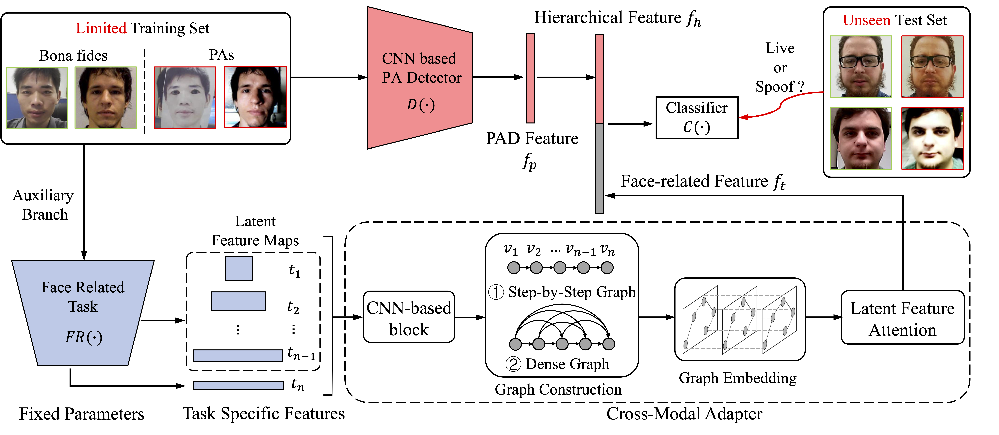
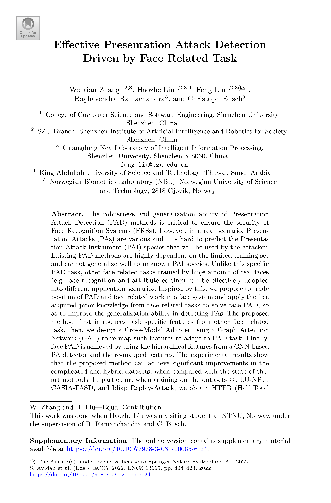
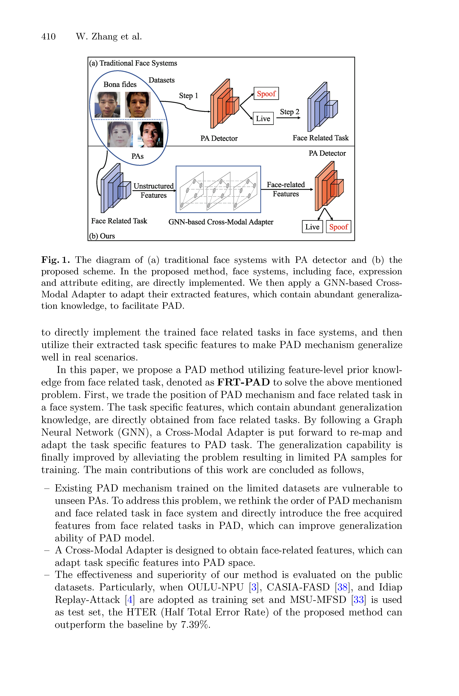
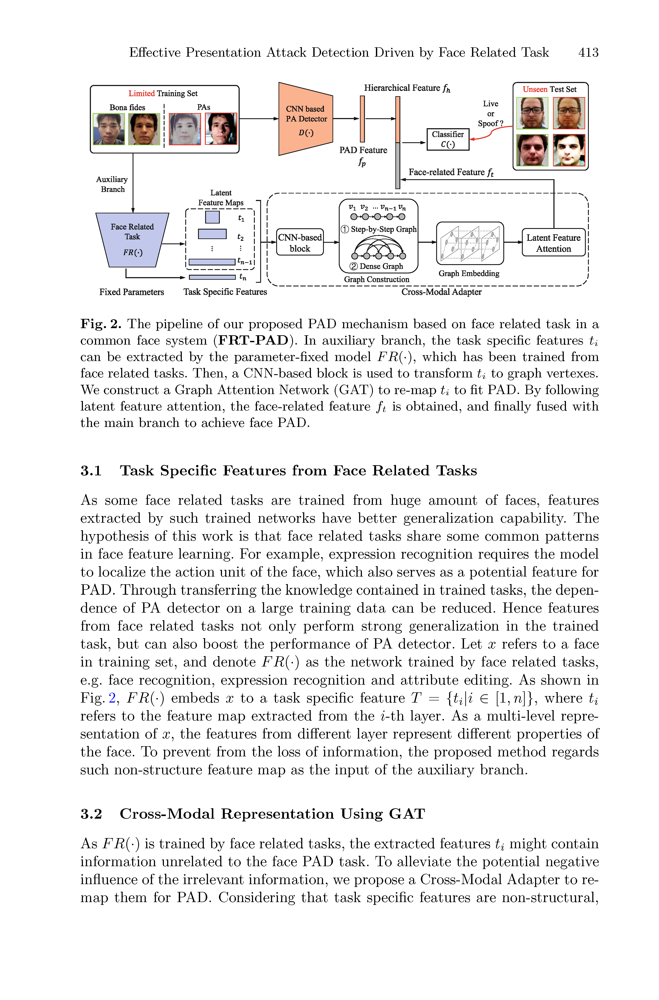
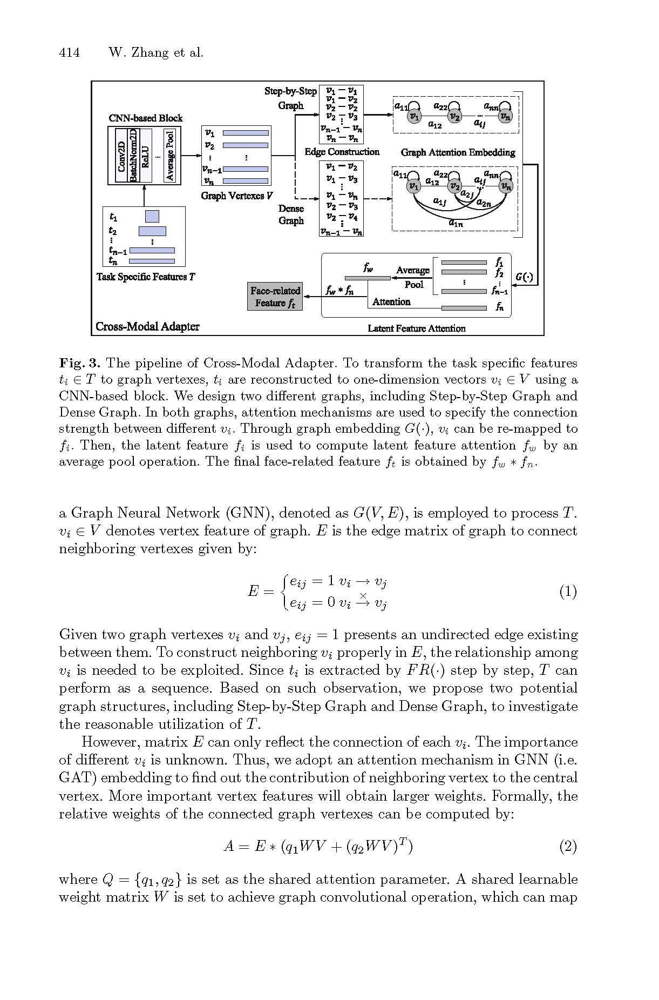
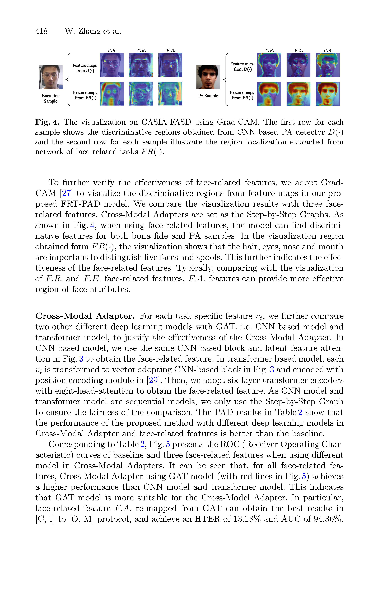
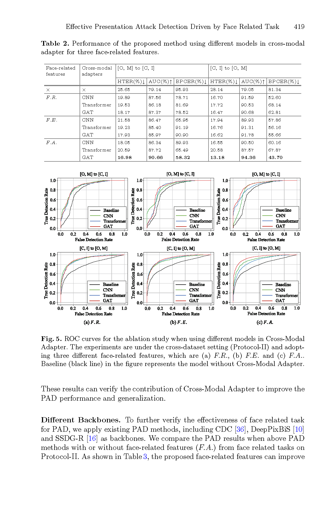
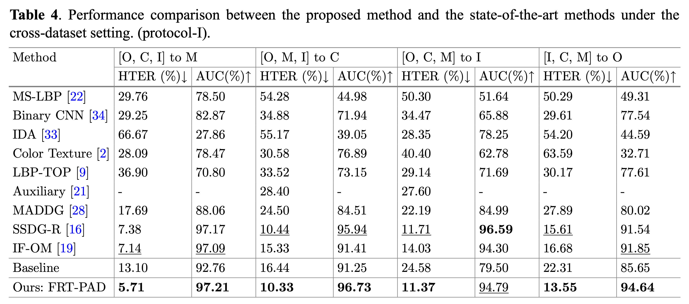
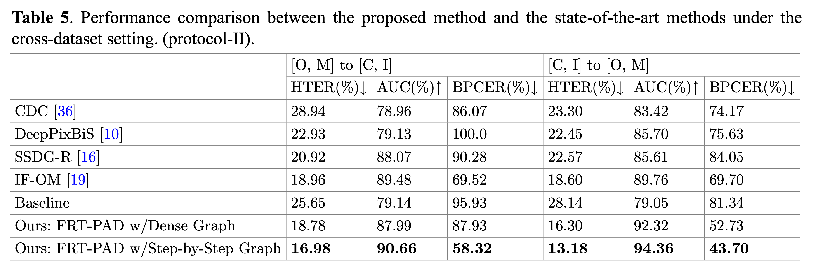
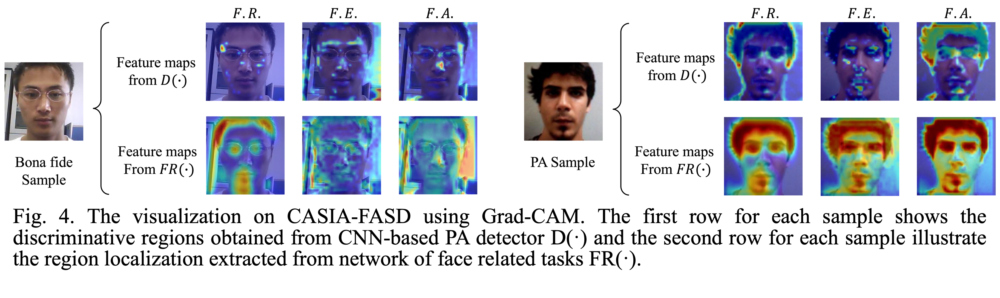

Effective Presentation Attack Detection Driven by Face Related Task |
|
Wentian Zhang1,†
Haozhe Liu1,2,†
Feng Liu1
Raghavendra Ramachandra3
Christoph Busch3
1 Computer Vision Institute, Shenzhen University |
|  |
| The robustness and generalization ability of Presentation Attack Detection (PAD) methods is critical to ensure the security of Face Recognition Systems (FRSs). However, in a real scenario, Presentation Attacks (PAs) are various and it is hard to predict the Presentation Attack Instrument (PAI) species that will be used by the attacker. Existing PAD methods are highly dependent on the limited training set and cannot generalize well to unknown PAI species. Unlike this specific PAD task, other face related tasks trained by huge amount of real faces (e.g. face recognition and attribute editing) can be effectively adopted into different application scenarios. Inspired by this, we propose to trade position of PAD and face related work in a face system and apply the free acquired prior knowledge from face related tasks to solve face PAD, so as to improve the generalization ability in detecting PAs. The proposed method, first introduces task specific features from other face related task, then, we design a Cross-Modal Adapter using a Graph Attention Network (GAT) to re-map such features to adapt to PAD task. Finally, face PAD is achieved by using the hierarchical features from a CNN-based PA detector and the re-mapped features. The experimental results show that the proposed method can achieve significant improvements in the complicated and hybrid datasets, when compared with the state-of-the-art methods. In particular, when training on the datasets OULU-NPU, CASIA-FASD, and Idiap Replay-Attack, we obtain HTER (Half Total Error Rate) of 5.48% for the testing dataset MSU-MFSD, outperforming the baseline by 7.39%. |
|       |
|  |
|  |
|  |
|